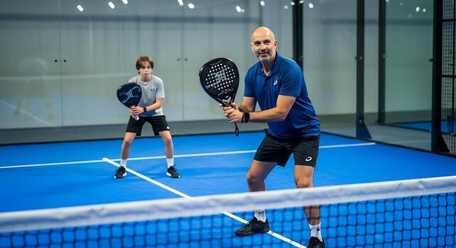

🏠 Home
Footwork and Court Positioning in PaDel🎾
Proper footwork and court positioning are essential for success in padel. They help you move efficiently around the court and maintain balance during shots.
Tips for Better Footwork and Court Positioning:
- Watch a video tutorial on footwork and court positioning
- Practice moving quickly and smoothly to different positions on the court.
- Stay balanced after each shot to be ready for the next one.
- Position yourself to cover the most likely shots from your opponent.
- Work on your agility drills to improve your movement speed.
